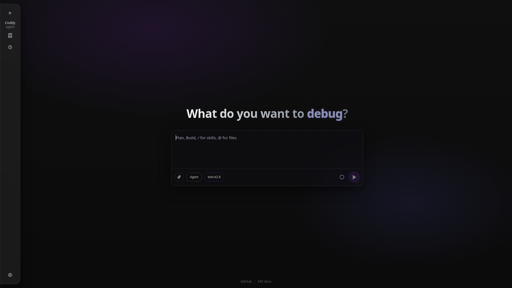
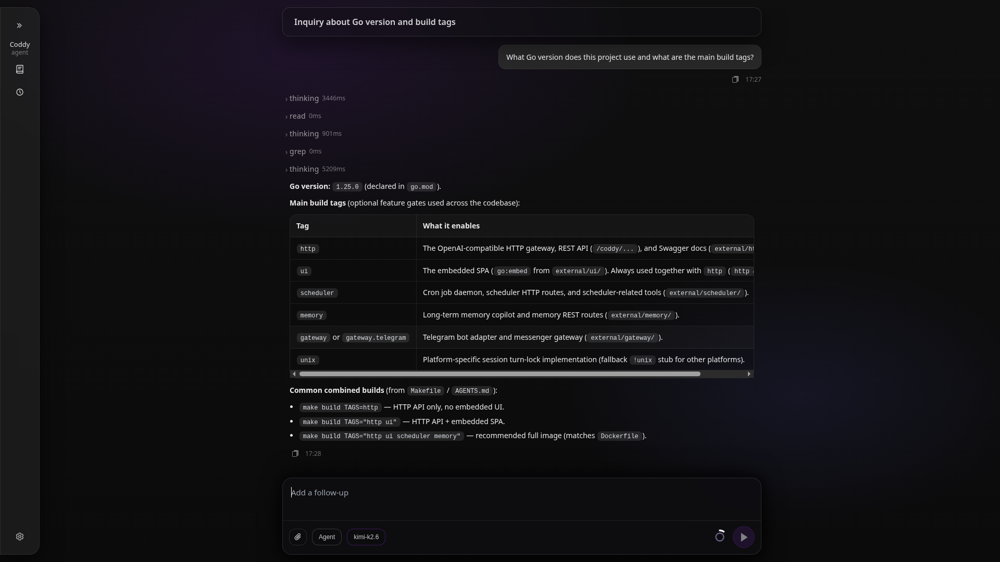
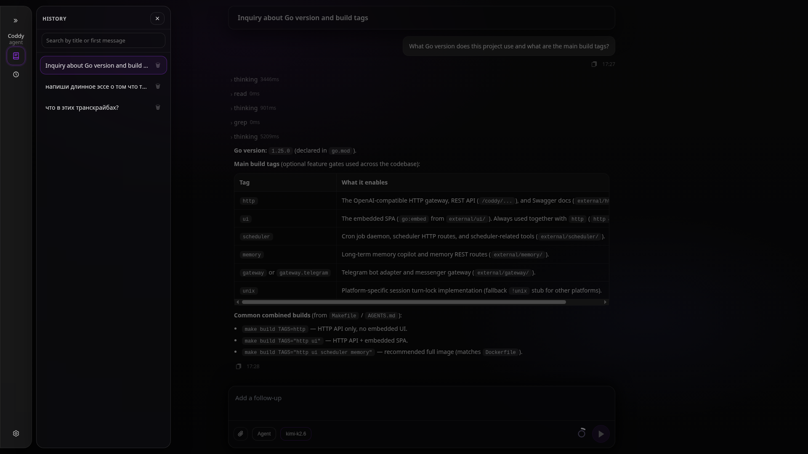
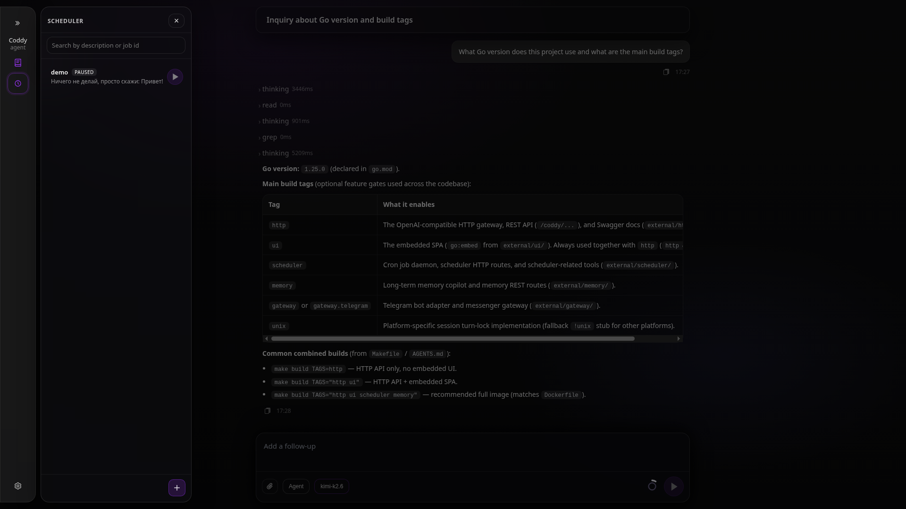

Distroless harness для on-premise AI
Павел Рыков
aka Pavel Zloi
single binary
distroless harness
ACP, OpenAI API
MIT
Смотрите, как это выглядит

Встроенный веб-интерфейс · запущен локально · on-premise
Проблема
-
☁️
Облако = чужой компьютер Код улетает во внешние API. Compliance, NDA, корпоративная безопасность — несовместимо с cloud-first агентами.
-
📦
Тяжёлые рантаймы не влезают в distroless Claude Code = Node.js. В scratch или distroless образ не запустишь. Рой (swarm) агентов ждут.
-
🔌
Нет единого backend для всех клиентов Cursor, ClaudeCode, Codex, OpenClaw, CI-пайплайн, Telegram-бот — у каждого отдельная история, нет общего стейта.
-
🦙
On-premise модели остаются за бортом llama.cpp, vLLM, Ollama, DeepSeek, Qwen локально — универсального harness для них нет.
Решение — Coddy Agent
Один статический Go-бинарник. 35 МБ. Без рантайма.
🐋 Distroless-ready
Может работать в scratch образе и даже в read-only rootfs. Идеально для роя агентов.
🔒 On-premise first
Данные не покидают ваш контур. Docker Compose — 2 строки. Или просто запустите бинарник.
🤖 Multi-provider LLM
OpenAI, Anthropic, Ollama, любой OpenAI-compatible API. Никакого вендорлока.
🔌 ACP
Agent Control Protocol — общий backend для VS Code, Obsidian, Zed и т.д.
🔌 OpenAI API
Возможность интеграции с любым внешним приложение через OpenAI-совместимое API.
✈️ Telegram gateway
Per-user сессии, ACL, group isolation. Discord и Slack — через тот же adapter interface.
Архитектура
Obsidian / Zed
Browser UI
Telegram Bot
Scripts / CI
↕ ↕ ↕ ↕
coddy acpJSON-RPC 2.0 · stdio
coddy httpOpenAI-compatible REST
coddy gatewayTelegram · Discord · …
↓
Session Managerhistory · rules · skills · mode · persistence
↓
⚡ ReAct Loop · THINK → ACT → OBSERVE → RETRY
↓
LLM ProviderOpenAI · Anthropic · vLLM
Tools (30+)FS · Shell · SSH · Web
MCP ServersExternal tools
Memory Copilot · Cron-like SchedulerOptional modules
Возможности
🔧 30+ инструментов
FS-операции, run_command, SSH через чистый Go (без внешних зависимостей), веб-поиск через Google и DuckDuckGo + readability.
⚡ Skills — slash-команды
SKILL.md → .coddy/skills → готовая /команда. Переиспользуемые рабочие процессы без кода.
📋 Rules — правила проекта
Автоматически читает .cursor/rules, .claude/rules, .codex/rules/, .coddy/rules. Один раз написал — работает везде.
🧠 Long-term memory
Глобальная и project-local память между сессиями. Recall и persist вне основного LLM.
⏰ Cron scheduler
Запуск задач агента по расписанию. Markdown-формат заданий. Управление прямо в веб-UI.
🔌 MCP-серверы
Подключение любых MCP — GitHub, Filesystem, БД. Инструменты автоматически в ReAct loop.
Интерфейс · чат и tool timeline

Каждый tool call — имя, аргументы, результат. Streaming, прерывание, восстановление сессии. Никакого black box.
Интерфейс · история сессий

Сессии из IDE, браузера и Telegram — в одной ленте. Поиск, переключение между проектами в один клик.
Интерфейс · cron-планировщик

Задания в markdown — агент сам редактирует свой список. Управление прямо в браузере.
Три режима работы
coddy acp
ACP · JSON-RPC 2.0 over stdio
Obsidian или Zed как external agent. Streaming, permission prompts, восстановление сессий.
coddy http
OpenAI-compatible API + встроенная SPA
POST /v1/responses — любой OpenAI-клиент работает с Coddy как бэкендом. n8n, Open WebUI или ваш Python-скрипт.
coddy gateway
Telegram Bot (и другие мессенджеры)
Per-user сессии, ACL, isolation modes. Расширяемо: Discord, Slack — через Gateway adapter.
Все три режима используют одно хранилище сессий —
IDE + браузер + Telegram синхронизированы автоматически
Результаты и планы
Результаты
- 35 МБ binary запускается в scratch docker-образе
- Opus-4.8, GPT-5.5, DeepSeek-4-Flash, Qwen-3.6-35b через Ollama — для всего одна конфигурация
- VS Code + Obsidian + браузер + Telegram — общее хранилище со всей историей всех сессий
- Правила проекта из .cursor/rules/ работают без изменений из коробки
- SSH на удалённые хосты без внешних бинарников
Планы
- Discord и Slack адаптеры через Gateway интерфейс
- Расширение экосистемы skills
- Векторный поиск в Memory Copilot
- Улучшение мобильного UI и PWA
- Готовые образы для agent swarm деплоя
Целевая ниша:
on-premise энтерпрайз, agents swarm (container fleet), CI/CD пайплайны
on-premise энтерпрайз, agents swarm (container fleet), CI/CD пайплайны
Уроки
Protocol-first побеждает
ACP с дня 1 → HTTP-сервер и Telegram-gateway прицепились почти бесплатно поверх общего Session Manager. Интерфейсный контракт переживает реализации.
Go single binary > Node / Python
Scratch и distroless работают сразу. В CI разворачивается одной командой — никакого «сначала npm install», никаких node_modules. Цена входа для роя агентов = ноль.
Build tags вместо плагинов
Из одной кодовой базы — и lean ACP-бинарник, и полный образ с UI / scheduler / memory / gateway. Компромисс между монолитом и плагинной архитектурой — без второй системы сборки.
Совместимость даёт бесплатных пользователей
.cursor/rules, .claude/rules, .codex/rules + OpenAI-compatible API — пользователь приходит со своими форматами. Не выдумывай новые там, где есть устоявшиеся.
Shared state требует дисциплины абстракций
IDE + браузер + Telegram пишут в одну сессию. Любая утечка деталей транспорта в общий слой ломает остальные клиенты — Session Manager пришлось делать самой консервативной частью кодовой базы.
Ссылки

⭐ Звёздочки и PR приветствуются!
Не забудь подписаться на мою телегу!